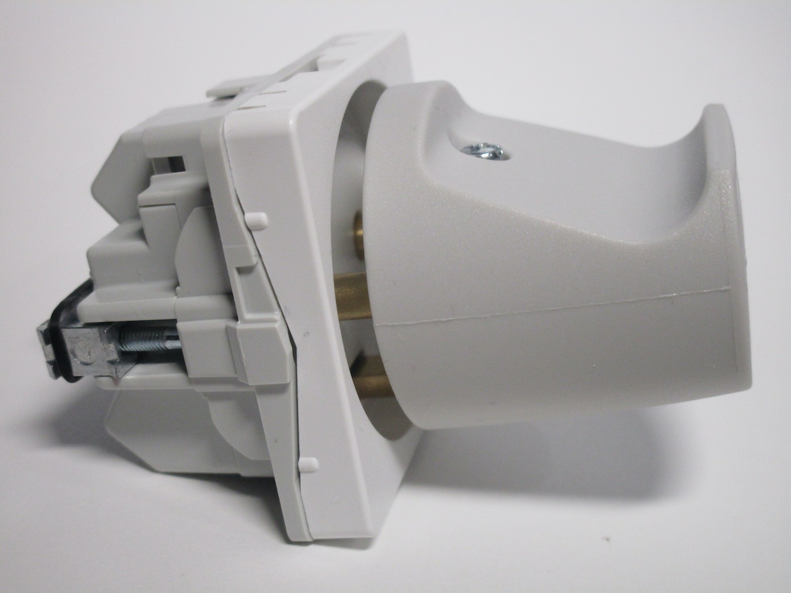
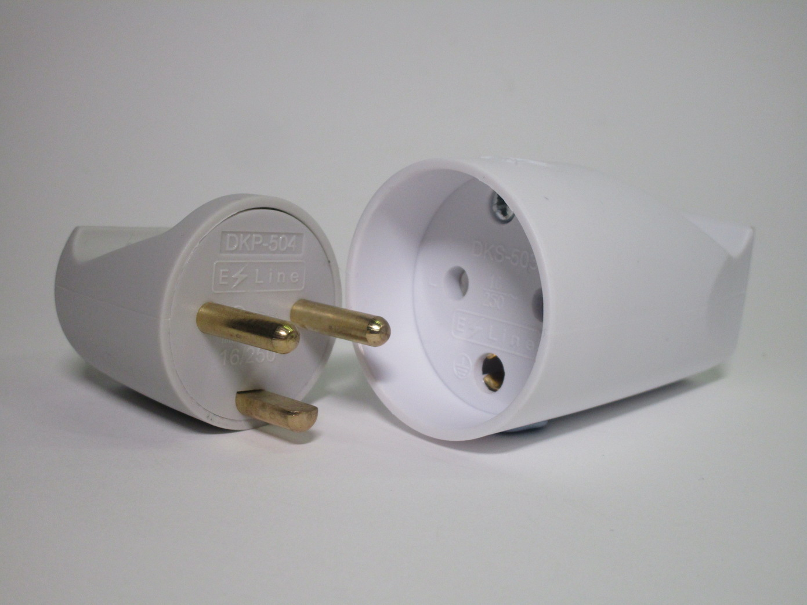
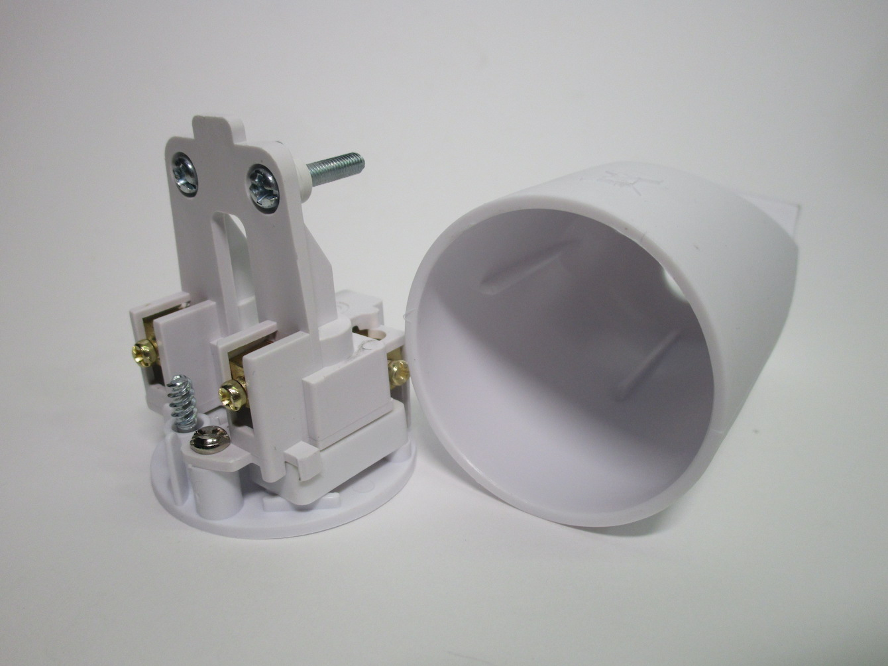

Danish and Swiss plugs and sockets
Aside from Italy, there are only other two countries in Continental Europe not using Schuko or French-style power sockets: Denmark and Switzerland.
Danish plugs and sockets
Danish plugs and sockets are fairly similar to the standard ones used in Europe, however they have a significant difference, as the plugs use a third pin (shaped like a semicircle) for the earth connection, similarly to other standards around the world, instead of side contacts like on Schuko plugs.
Because of this, the sockets (which are generally well-known for looking very happy) are effectively very similar to the classic CEE 7/1 non-earthed sockets, but with a hole for the earth pin, and will thus (unlike Schuko or French sockets) also accept old CEE 7/2 plugs.
Standard Danish power socket
Rating: 16A 250V
This is a standard type of Danish socket as found in most houses in Denmark. Compared to the Schuko sockets found in most parts of Europe, this type is polarised (that is, live and neutral are irreversible). This power socket also features a safety shutter mechanism, which is a compulsory feature in Denmark.

The face of the power outlet also presents a slight recess, however it's considerably less deep than on other types
of sockets; because of this, it doesn't entirely prevent the pins of the plugs - which, at least on earthed ones, are
unsleeved - from being touchable.
However the recess is deep enough that it should at least help prevent most types of accidental contacts, especially
given the fairly large shape of the plugs.
Note that not all Danish outlets do have a recess; ones without it are allowed, but they have to have a power switch to turn the power to the socket off (like on UK sockets, though that's not compulsory there) as a sort of safety feature to prevent touching the live pins (though obviously not the best one, since someone could just forget to use the switch).
{kind=link}
{kind=link}
{kind=link}
The front of the socket unclips, revealing the mounting screws, which, very unusually, are Torx, as well as the
colour-coded pushable levers for the screwless wire connections on the back (a fairly unusual feature).
The device seems to mount similarly to older types of European electrical accessories, with two side arms (normally
kept together with an elastic band) that push to the side of the wall-box. However, this socket is far too small to
utilise a normal European-style box; evidently there must be a different type in use in Denmark, though I can't
find any info about this.
The main problem with Danish sockets, despite them not being overall a terrible design (though, as described here, they do still have some issues), is that they can accept earthed Schuko and French-style power plugs (which are quite common in Denmark), but without providing an earth connection.
Adaptors that solve this problem do of course exist, however from my understanding they're not always used, since to the end user an earthed device plugged into this type of socket will "just work", but obviously without this very important safety feature.
Danish power plugs
Rating: 16A 250V
Earthed Danish power plugs are generally fairly similar to other round European plugs seen before, however of course their notable feature is the fact that they use an earth pin instead of side contacts (Schuko) or a hole (French).
While this is similar to other plug standards around the world, such as the Italian, British or American ones, the earth pin is, unusually, shorter, a feature not found on any other standard. Thankfully the sockets do still ensure that the earth is connected first and disconnected last, but because of the shorter earth pin it means that the contacts have to stick out quite far.
{kind=link}
{kind=link}

This other type of plug is quite similar to the one shown before, but with the cord at a 90° angle. This is quite useful in case there's something in front of the socket, like furniture or the appliance itself.
{kind=link}

{kind=link}
Connector socket
Rating: 16A 250V
This is a connector socket, as used on things like extension cords. It's quite similar to the socket shown earlier, but there are some differences with this one as well. This socket has a quite deep recess, definitely much deeper than the one shown before, which allows for full protection against touching live parts. Additionally, the hole for the earth contact on this socket is round rather than a semicircle.
 {kind=link}
{kind=link}
{kind=link}
Swiss plugs and sockets
Swiss plugs and sockets have quite a lot of differences to the ones used in the rest of Europe. Most plugs and sockets are rated at 10A; they have a sort of hexagonal shape and are polarised. Their small size means that it's possible to fit three Swiss sockets in the same space as a single Schuko one; additionally, 16A single-phase and 10 and 16A three-phase versions are also available.
T12 plugs
Rating: 10A 250V
These are two examples of a Swiss T12 plug, the main type of plug used in Switzerland.
It is somewhat similar to the 10A Italian plug, however the earth pin isn't in the middle, which means that
the plug is polarised: it can only be inserted in one way.
Both are older models - because of this, neither of them features any sort of sleeving on the pins. It should be noted however that newer Swiss sockets are recessed, so this wouldn't be as big of a problem there.

{kind=link}
{kind=link}
The second plug doesn't feature a cord grip, however it does have some ridges on the moulding to make it easier to plug in and unplug.
{kind=link}
{kind=link}
{kind=link}
"Resista" hybrid socket, and T12 plug
Rating: 10A 250V
This is an interesting Swiss socket, and the plug that went along with it; it is branded as "Resista", and it's a T14 socket that's also compatible with T12 plugs.
T14 was the standard of plugs used before the T12 one used nowadays; when it was replaced by the T12 standard for a brief period you could buy these types of sockets that were compatible with both types of plugs. The socket has an earth pin since T14 plugs required the socket itself to have an earth pin - just like with French sockets. However, T14 sockets are not compatible with French plugs.


{kind=link}

T14 plug
Rating: 10A 250V
As mentioned above, this was the style of plug used in Switzerland before the current one. Its main feature is that the earth connection is done using a pin in the socket (which means that the plug has a hole corresponding to that) instead of the pin being on the plug itself like on most other standards.
The main reason for the switch to the current T12 standard was that, like with the French ones, this plug can be inserted into non-earthed sockets, thus defeating the protective earth connection.
{kind=link}
{kind=link}
{kind=link}